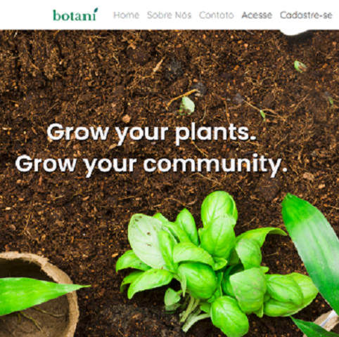

a website for plant's lovers
Botani is a social network where the main goal is to be a practical platform for users to share their special plants. The focus is keeping track of each plant's growth, with a special timeline feature.
You can check the code for Botani in my Github.
The web plataform was created during Digital House Brasil's Web Full-Stack course, using Laravel.
Right now, Botani is in it's first stage of development. I hope to have more news soon!